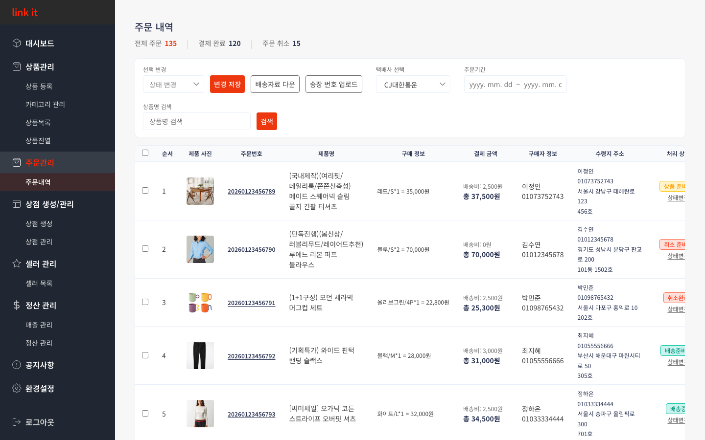

CHAPTER 3
주문관리
주문 내역 · 상태 변경 · 배송 처리
3.1
주문 내역 & 처리 상태 관리
전체 주문 목록과 처리 상태를 확인합니다. 상태 변경, 배송자료 다운로드, 송장번호 업로드를 통해 주문을 처리합니다.

1
2
3
사용 방법
1
상단 요약으로 주문 건수 파악
페이지 최상단의 요약 수치에서 전체 주문수, 결제 완료, 주문 취소 건수를 즉시 확인합니다. 처리가 필요한 주문 규모를 먼저 파악하세요.
2
필터·검색으로 주문 조회
상태 변경 드롭다운, 기간 필터, 택배사 선택, 상품명 검색을 조합해 원하는 주문을 추려낼 수 있습니다. [배송자료 다운]과 [송장번호 업로드]로 배송 업무를 일괄 처리하세요.
3
처리 상태 배지로 상태 변경
각 행 오른쪽의 상태 배지(상품 준비중·배송준비중·배송중·취소 준비중·취소완료)를 클릭하면 해당 주문의 처리 상태를 즉시 변경할 수 있습니다.
💡 일괄 처리 방법
체크박스로 여러 주문을 선택 → 상단 [상태 변경] 드롭다운에서 상태 선택 → [변경 저장] 클릭으로 한번에 처리됩니다.
←
이전 챕터
2. 상품관리
CHAPTER 3 / 8
다음 챕터
4. 상점 생성/관리
→